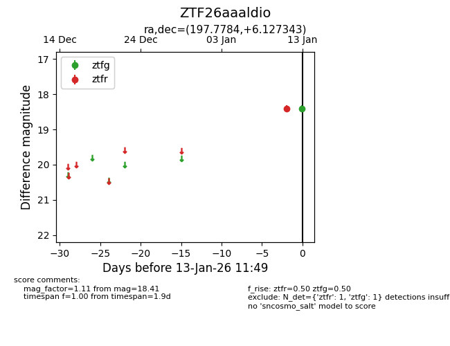
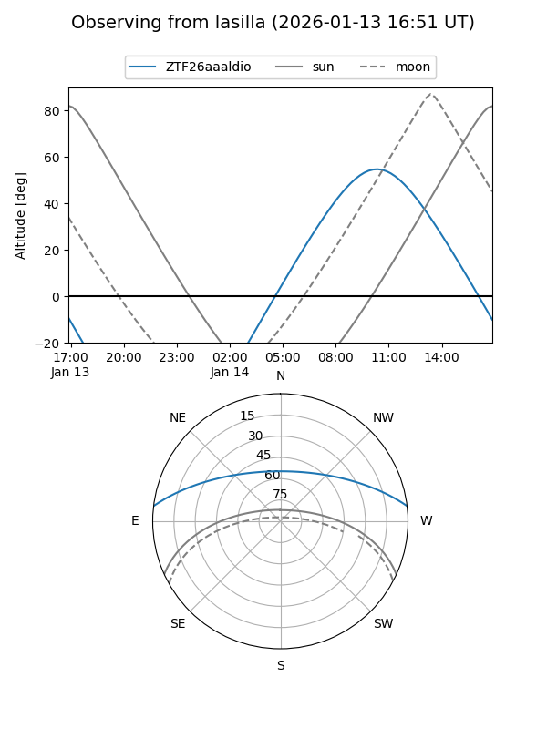
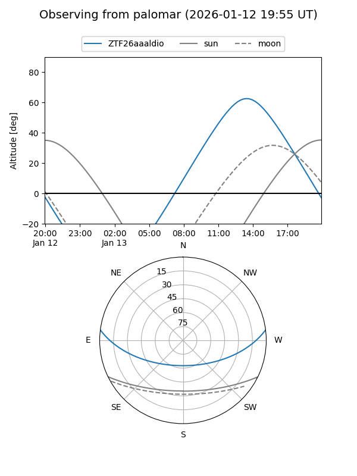

ZTF26aaaldio
Target ZTF26aaaldio at 2026-01-13 11:50
Aliases and brokers:
FINK: link
Lasair: link
ALeRCE: link
alt names
ZTF26aaaldio (ztf,fink_ztf)
Coordinates:
equatorial (ra, dec) = 197.7784,+6.12734
equatorial (HMS+DMS) = 13:11:06.83,+06:07:38.44
galactic (l, b) = (316.3738,+68.48407)
Flags:
Photometry:
last ztfg=18.41, ztfr=18.41
1 ztfg, 1 ztfr detections
Lightcurve

Visibility


Additional plots